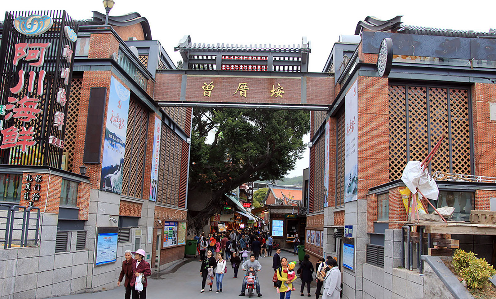

曾厝垵
|  |
景点介绍曾厝垵，中国最文艺渔村 ，为“曾厝垵文创村 ”的简称。别名“曾里”，又称“曾家沃”、“曾家湾”，位于厦门岛东南部，有兔耳岭之草，太姥山之石，火山岛之礁，自然人文为一体。至今已有八百多年历史。 作为景区的曾厝垵文创村只占0.33平方公里。 除了建筑外，路旁散落的建筑构件都在提醒着你，华侨经济曾经对这个自然村产生的影响，断残的龙柱、来自吕宋的铁花、台湾日据时代生产的瓷砖等等。走在曾厝垵，随处可见当年华侨遗留下来的痕迹。建筑是最直观的展示，当年华侨建造了大量红砖古厝和南洋风格的“番仔楼”，至今仍有所保留。较大的住宅群甚至综合两种建筑风格为一体：古建筑的前面两“落”的屋顶为马鞍脊或燕尾脊，最后一“落”却是南洋风味的“番仔楼”。 |